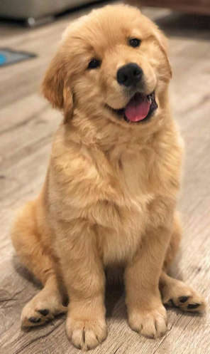

Here are just a few of the types of dogs I enjoy interacting with:
Here are a few I stay away from:
Here is something about my favorite, favorite: 
The Golden Retriever is a medium-large gun dog that retrieves shot waterfowl, such as ducks and upland game birds, during hunting and shooting parties. The name "retriever" refers to the breed's ability to retrieve shot game undamaged due to their soft mouth.